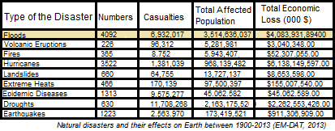

It is a project that evaluates the preparedness of the state or related institutions for flood disaster and helps with the evaluation and reduction of the risks.
One of its main ambitions is connecting diffrent data sets and giving the user a wider wiew point on the subject of risk reduction in flood diesetres.
First of all, our system gives various examples of the relationship of flood to various issues and explains these examples in a comprehensive way.
Secondly It offers various solutions for these issues and asks the reader to evaluate the region of interest according to these suggestions.
After this this our system gives a note on the state of the area by evaluating numbers according to various priorities
In most of existing flood policies and precautions mostly focus on singular aspects of the flooding our system evaluates flood in all aspects and handles every aspect of flood risk reduction.The sources below explain the importance of this more clearly.
